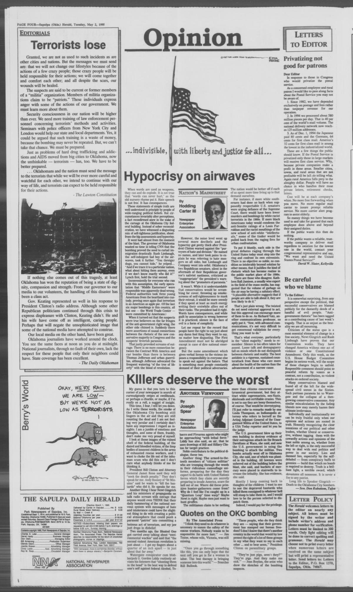

HN HN-814 · April 29, 1995 · War, Conflict & Security > Terrorism & Political Violence > Political militancy
Source: Indianapolis Recorder, p. 2 — original commentary; FBI case history.
Report: Charles Blair denounced violent and racist rhetoric associated with the militia movement and warned of possible further tragedy after the Oklahoma City bombing.
Assessment: An attributed editorial argument, not proof that every militia member was involved in the bombing. The FBI's investigation and subsequent prosecutions establish the actions of specific offenders, whereas broad political and racial interpretations require distinct evidence.
Authentic images retrieved from Gateway to Oklahoma History (Oklahoma Historical Society). Article crops are located using the archive's own OCR word coordinates and rendered at native crop resolution; article clips are assembled from the archive's own article-block images; page scans are reduced-size access renditions. No images were generated, mocked, or retouched.

Not yet acquired. Queued for provider-specific acquisition testing (see source-acquisition manifest).
URL (preserved verbatim): https://newspapers.library.in.gov/?a=d&d=INR19950429-01.1.2
Saved research report: Historical_Newspaper_Event_Research_803-827_2026-10-23.md
Evidence note: A newspaper report means a historical publication made a claim; it does not establish that claim as fact. Contemporary reporting is separated from later scholarly context and our own assessment.